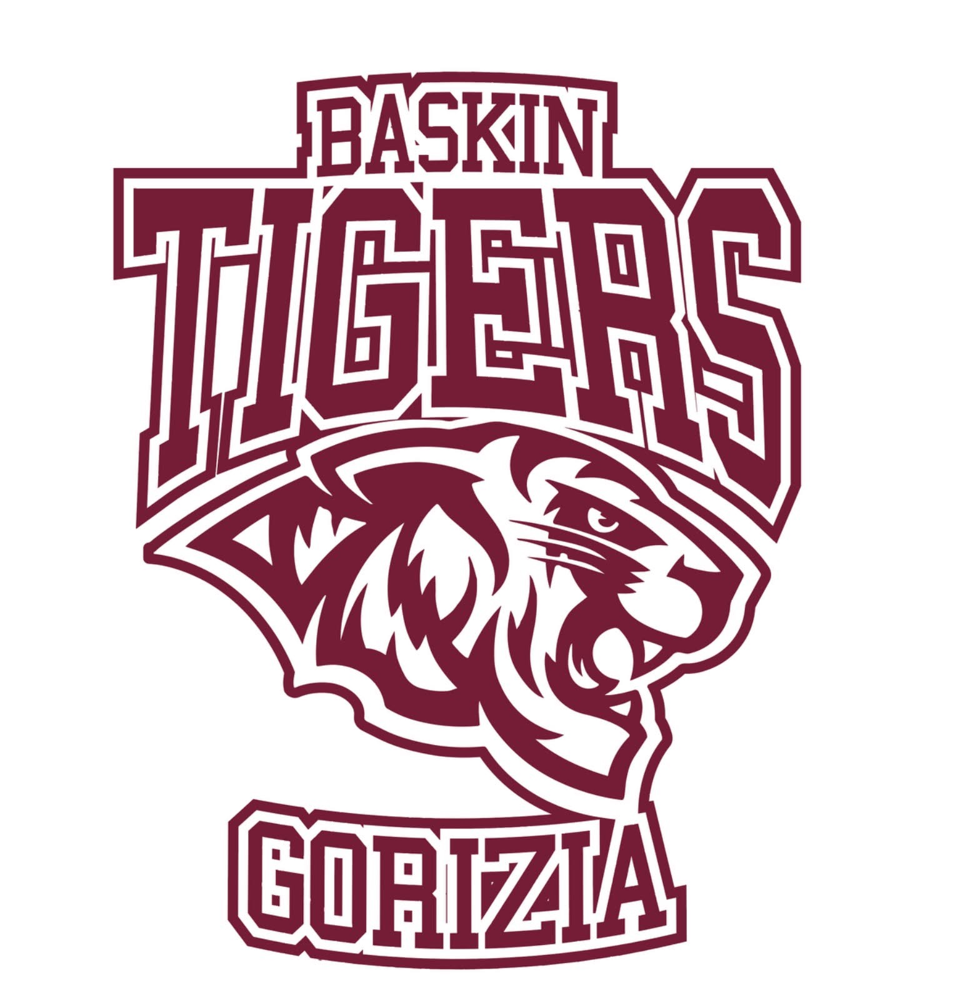

<!doctype html><html lang="it"><meta charset="utf-8"><meta name="viewport" content="width=device-width,initial-scale=1"><title>Tigers · Calendario EISI 2026/27</title><style>
:root{--wine:#741c3b;--green:#245c45;--paper:#f6f3ec;--ink:#242c29}*{box-sizing:border-box}body{margin:0;background:var(--paper);color:var(--ink);font:16px system-ui,sans-serif}header{background:var(--wine);color:white;padding:40px max(6vw,20px)}.logo{float:right;width:110px;height:120px;object-fit:contain;background:white;padding:8px;border-radius:12px;margin-left:20px}header small{letter-spacing:3px;color:#e8c8d2}h1{font-size:clamp(32px,6vw,58px);line-height:1.05;margin:16px 0}header p{color:#f0dae3}main{max-width:1000px;margin:auto;padding:28px 20px}.toolbar{display:flex;gap:10px;flex-wrap:wrap;align-items:center;margin:24px 0}button,select,a.link{font:inherit;border:1px solid #d4d7cd;border-radius:30px;padding:11px 20px;background:white;color:var(--ink);cursor:pointer}button.active{background:var(--green);color:white;border-color:var(--green)}.notice{padding:16px 20px;background:#e9eddf;border-radius:12px;font-size:14px;line-height:1.6}.card{display:flex;gap:24px;padding:24px;background:white;border-radius:16px;margin:14px 0;border-left:5px solid var(--wine);box-shadow:0 4px 15px #23302405}.date{min-width:65px;color:var(--wine);text-align:center}.date strong{font-size:32px;display:block}.date span{text-transform:uppercase;font-size:13px}.card h3{margin:6px 0 10px;font-size:21px}.meta{color:#626b64;line-height:1.8;font-size:14px}.badge{font-size:11px;font-weight:bold;letter-spacing:1px;color:var(--green)}a{color:var(--green)}h2{font-size:22px;margin-top:32px}.grid{display:grid;grid-template-columns:repeat(7,1fr);gap:5px}.day{min-height:90px;background:white;border-radius:8px;padding:8px;font-size:13px}.day.event{background:#f1dfe5;color:#671833;font-weight:bold}.day.empty{background:transparent}.day small{display:block;font-size:10px;line-height:1.3;margin-top:5px}.weekday{text-align:center;font-size:12px;padding:10px}.secondary{opacity:.8}.foot{margin:35px 0;color:#6a726c;font-size:13px;line-height:1.8}.emptymsg{padding:30px;text-align:center}#monthTitle{margin:0;min-width:170px;text-align:center}@media(max-width:550px){.card{gap:14px;padding:18px 13px}.card h3{font-size:18px}.day{min-height:75px;padding:5px}.toolbar button{padding:10px 14px}}
</style><header><small>POLISPORTIVA GORIZIANA · BASKIN</small><h1>Tigers Baskin Gorizia</h1><p>Campionato EISI FVG · Stagione 2026/27</p></header><main><div class="notice">📌 <b>Calendario provvisorio</b> · Prima fase ver. 03.5. Date, orari e sedi possono cambiare. Ultimo aggiornamento: 29 ottobre 2026.</div><div class="toolbar"><button id="agendaBtn" class="active">Agenda</button><button id="calendarBtn">Calendario</button><select id="filter" aria-label="Filtra appuntamenti"><option value="all">Tutti gli appuntamenti</option><option value="match">Partite prima fase</option></select></div><section id="agenda"></section><section id="calendar" hidden><div class="toolbar"><button id="prev" aria-label="Mese precedente">←</button><h2 id="monthTitle"></h2><button id="next" aria-label="Mese successivo">→</button></div><div class="grid" id="grid"></div><div id="selected"></div></section><div class="foot">Le sedi sono riportate come nei calendari EISI: dove manca l'indirizzo preciso, il collegamento apre una ricerca sulla mappa. Convocazioni e ritrovi saranno comunicati dallo staff.<br><b>Tigers Baskin Gorizia · ASD Polisportiva Goriziana</b></div></main><script>
const matches=[["2026-11-15","15:45","Tigers Baskin Gorizia","Carpe Diem Turriaco","Palazzetto dello Sport, Cividale","Andata · Giornata 1"],["2026-11-22","17:00","KrosOver Pordenone","Tigers Baskin Gorizia","PalaMarson, Turriaco","Andata · Giornata 2"],["2026-12-06","11:30","All-In Trieste","Tigers Baskin Gorizia","Palazzetto, Trieste","Andata · Giornata 3"],["2027-01-09","17:00","Tigers Baskin Gorizia","Boom Baskin Latisana","PalaBrumatti, Piazzale Divisione Mantova, Gorizia","Andata · Giornata 5"],["2027-01-17","15:00","Carpe Diem Turriaco","Tigers Baskin Gorizia","PalaMarson, Turriaco","Ritorno · Giornata 1"],["2027-01-31","09:30","KrosOver Pordenone","Tigers Baskin Gorizia","Palazzetto, Pasiano","Ritorno · Giornata 2"],["2027-02-13","15:00","Tigers Baskin Gorizia","All-In Trieste","PalaBrumatti, Piazzale Divisione Mantova, Gorizia","Ritorno · Giornata 3"],["2027-03-07","11:30","Boom Baskin Latisana","Tigers Baskin Gorizia","Palazzetto, Trieste","Ritorno · Giornata 5"]].map(([date,time,a,b,place,note])=>({date,time,title:a+' — '+b,place,note,type:'match'}));
const rests=['2026-12-20','2027-02-28'].map(date=>({date,title:'Turno di riposo Tigers',note:'Prima fase · Giornata 4',type:'rest'}));const all=[...matches,...rests].sort((a,b)=>a.date.localeCompare(b.date));let month=10,year=2026;const $=id=>document.getElementById(id);const dt=s=>new Date(s+'T12:00:00');const fmt=(d,opt)=>dt(d).toLocaleDateString('it-IT',opt);function filtered(){return all.filter(e=>$('filter').value==='all'||e.type===$('filter').value)}function card(e){return `<article class="card"><div class="date"><strong>${fmt(e.date,{day:'2-digit'})}</strong><span>${fmt(e.date,{month:'short',year:'numeric'})}</span></div><div><span class="badge">EISI · ${e.type==='match'?'PRIMA FASE':e.type==='rest'?'RIPOSO':'DA DEFINIRE'}</span><h3>${e.title}</h3><div class="meta">${e.time?'◷ '+e.time+' · ':''}${fmt(e.date,{weekday:'long'})}<br>${e.place?'📍 '+e.place+'<br>':''}${e.note}</div>${e.place?`<p><a target="_blank" rel="noopener" href="https://www.google.com/maps/search/?api=1&query=${encodeURIComponent(e.place)}">Cerca la palestra ↗</a></p>`:''}</div></article>`}function render(){let last='';$('agenda').innerHTML=filtered().map(e=>{let k=e.date.slice(0,7),h=k!==last?`<h2>${fmt(e.date,{month:'long',year:'numeric'})}</h2>`:'';last=k;return h+card(e)}).join('');renderMonth()}function renderMonth(){let label=new Date(year,month,1).toLocaleDateString('it-IT',{month:'long',year:'numeric'});$('monthTitle').textContent=label;let off=(new Date(year,month,1).getDay()+6)%7,days=new Date(year,month+1,0).getDate();$('grid').innerHTML=['L','M','M','G','V','S','D'].map(x=>'<div class="weekday">'+x+'</div>').join('')+'<div class="day empty"></div>'.repeat(off)+Array.from({length:days},(_,i)=>{let s=`${year}-${String(month+1).padStart(2,'0')}-${String(i+1).padStart(2,'0')}`,es=filtered().filter(e=>e.date===s);return `<div class="day ${es.length?'event':''}">${i+1}${es.map(e=>'<small>'+ (e.type==='match'?e.time+'<br>Partita Tigers':e.type==='rest'?'Riposo':'Seconda fase')+'</small>').join('')}</div>`}).join('');let es=filtered().filter(e=>e.date.startsWith(`${year}-${String(month+1).padStart(2,'0')}`));$('selected').innerHTML=es.length?es.map(card).join(''):'<p class="emptymsg">Nessun appuntamento in questo mese.</p>'}$('agendaBtn').onclick=()=>{ $('agenda').hidden=false;$('calendar').hidden=true;$('agendaBtn').classList.add('active');$('calendarBtn').classList.remove('active')};$('calendarBtn').onclick=()=>{$('agenda').hidden=true;$('calendar').hidden=false;$('calendarBtn').classList.add('active');$('agendaBtn').classList.remove('active')};$('filter').onchange=render;for(const [id,n] of [['prev',-1],['next',1]])$(id).onclick=()=>{month+=n;if(month<0){month=11;year--}if(month>11){month=0;year++}renderMonth()};render();
</script></html>
